🤖 Claude Code 入门教程
从零开始，手把手教你安装和使用 AI 编程助手
不需要任何编程基础，只要会打字就能学会
0 开始之前 — 三个你必须知道的概念
别被这些名词吓到！我们用最通俗的方式一一解释，保证你 5 分钟就能搞懂。
📺 什么是「终端 / 命令行」？
你平时操作电脑是用鼠标点来点去，对吧？这叫「图形界面」（GUI）。 终端（也叫命令行）就是「用键盘打字来操作电脑」的方式。
打个比方：你去餐厅点菜——
- 图形界面 = 看菜单上的图片，用手指点「我要这个」
- 终端 = 直接对服务员说「来一份红烧肉，少辣」
两种方式都能完成同样的事，但终端打字更快、更精确，程序员更喜欢用。Claude Code 就运行在终端里——你打字告诉它要做什么，它帮你搞定。
如何打开终端？
- Windows：按下键盘上的
Win键（Windows 图标键）+R键，输入powershell，点确定 - Mac：点屏幕右上角的放大镜图标（聚焦搜索），输入
terminal，回车
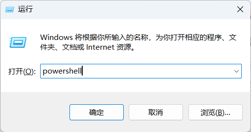
📦 什么是 Node.js / npm？
把电脑想象成一部手机：
- Node.js = 手机的「操作系统」（比如 iOS 或 Android）。没有它，很多程序跑不起来。
- npm = 手机的「应用商店」。你用它来下载和安装各种程序。
Claude Code 是一个用 JavaScript 写的程序，它需要 Node.js 这个「操作系统」才能运行。 我们要用 npm 这个「应用商店」来安装它——跟你在手机上装 App 一个道理。
🤖 什么是 Claude Code？
Claude Code 是 Anthropic 公司开发的 AI 编程助手。它运行在你的终端里， 你可以用日常的中文跟它对话，让它帮你：
- 🏗️ 写代码——比如「帮我做一个个人主页网页」
- 🔍 读代码——比如「这段代码是什么意思？帮我解释一下」
- 🐛 修 bug——比如「这个网页按钮点了没反应，帮我看看哪里有问题」
- 📂 管理项目——比如「帮我把这些文件整理一下」
想象你旁边坐了一位资深程序员，你跟他说需求，他帮你干活——Claude Code 就是这位程序员，而且不眠不休、随叫随到。
1 安装 Node.js（基础环境）
在使用 Claude Code 之前，我们必须先把它的「运行环境」Node.js 装好。跟着下面的步骤做，大约需要 3 分钟。
Windows 安装步骤
第 1 步：下载安装包
- 打开浏览器，访问 https://nodejs.org
- 你会看到两个绿色的大按钮——点左边的 LTS 版本（长期支持版，最稳定）
- 下载完成后，你会得到一个
.msi文件
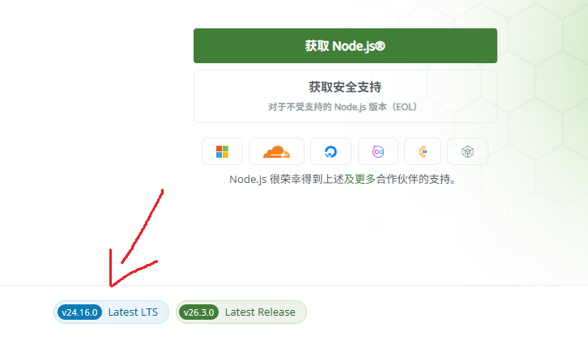
第 2 步：安装
- 双击下载的
.msi文件 - 一路点 Next（下一步），所有选项保持默认
- 最后点 Install（安装）
- 看到绿色的完成提示后，点 Finish（完成）
Mac 安装步骤
同样访问 https://nodejs.org，下载 .pkg 文件，双击安装即可。如果你装了 Homebrew，也可以在终端里输入：
brew install node # 用 Homebrew 安装 Node.js（如果你装过 Homebrew 的话）✅ 验证安装是否成功
安装完成后，关掉终端再重新打开（这一步很重要！），然后输入以下两条命令：
node -v # 查看 Node.js 版本号，比如 v20.11.0
npm -v # 查看 npm 版本号，比如 10.2.4如果能显示出版本号（一串数字），说明安装成功！如果显示「不是内部或外部命令」，说明安装有问题——别慌，跳到第 7 章看解决方案。
2 安装 Claude Code
Node.js 装好了，现在可以装 Claude Code 了。就一条命令，非常简单。
🗒️ 打开终端
- Windows：
Win+R→ 输入powershell→ 回车 - Mac： 聚焦搜索 → 输入
terminal→ 回车
📥 执行安装命令
在终端中粘贴下面这条命令，然后按回车：
npm install -g @anthropic-ai/claude-code这条命令在做什么？我们来拆解一下：
npm install= 「应用商店，帮我下载安装一个东西」-g= 「全局安装，装完后在任何地方都能用」（global 的缩写）@anthropic-ai/claude-code= 「要装的东西叫这个名」（包名）
现在按下回车，终端会开始下载。你看到一堆进度条和文字在滚动——这是正常现象，不用管。喝口水，等 1-3 分钟。
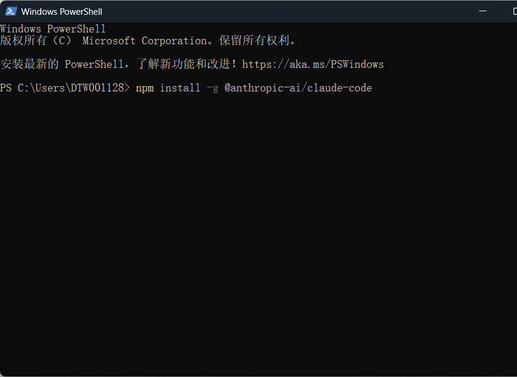
✅ 验证安装
安装完成后，输入以下命令验证：
claude --version # 如果显示版本号（如 v1.0.0），说明安装成功！🎉 恭喜！你已经完成了最难的一步！Claude Code 已经装到你电脑上了。
3 国内用户必读 — 配置 API 接口
由于网络限制，Claude Code 的官方服务在国内无法直接访问。但别担心！我们可以用国内的大模型 API 来替代，效果一样好，价格还便宜。
🚫 国内用户会遇到的问题
当你满怀期待地输入 claude 启动时，大概率会看到类似这样的报错：
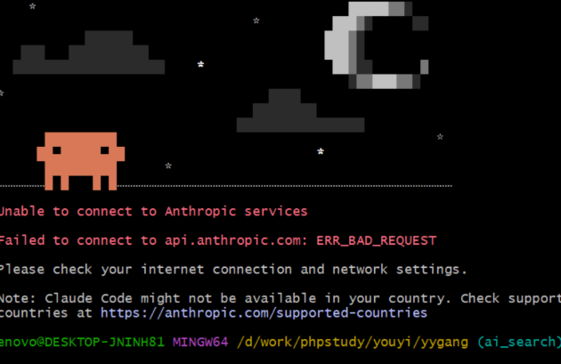
✅ 解决方案：使用国内大模型 API
我们推荐使用 DeepSeek（深度求索）——国产顶尖大模型，编程能力出色，而且价格极低（约 ¥1/百万 tokens，注册还送免费额度）。
| 🌐 Claude 官方 API | 🇨🇳 DeepSeek API | |
|---|---|---|
| 国内访问 | ❌ 需要特殊网络环境 | ✅ 直接访问，无需代理 |
| 注册方式 | 海外手机号 + 外币信用卡 | ✅ 国内手机号即可注册 |
| 编程能力 | ⭐⭐⭐⭐⭐ 顶级 | ⭐⭐⭐⭐⭐ 顶级（尤其擅长代码） |
| 价格 | $3 / 百万 tokens | ¥1 / 百万 tokens（约 1/20） |
| 新用户福利 | 无 | ✅ 注册赠送 500 万 tokens 免费额度 |
📝 第 1 步：注册 DeepSeek 账号
- 打开浏览器，访问 https://platform.deepseek.com
- 点击右上角「注册 / 登录」
- 用手机号注册（支持 +86 中国大陆手机号）
- 输入验证码，设置密码，完成注册
🔑 第 2 步：获取 API Key
- 注册成功后，登录 DeepSeek 开放平台
- 点击左侧菜单栏的 「API Keys」
- 点击 「创建 API Key」 按钮
- 给 Key 起个名字（比如「我的 Claude Code」）
- 点击「创建」，页面会显示一长串字符——这就是你的 API Key
- 立刻复制并保存！Key 只显示一次，关闭页面后就看不到了
- 使用前记得先充值！没有充值的话是用不了的
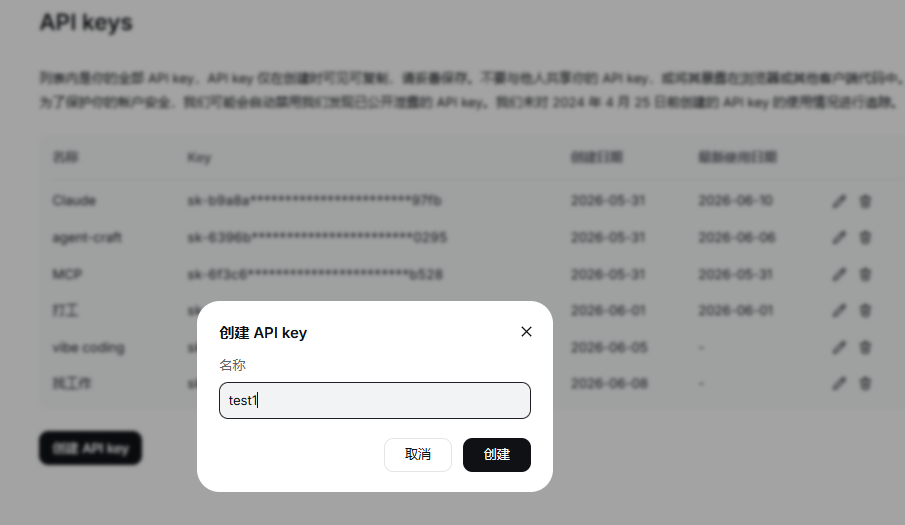
⚙️ 第 3 步：配置 Claude Code 使用 DeepSeek
拿到了 API Key，现在让 Claude Code「认识」DeepSeek。在终端中执行以下命令：
Windows PowerShell：
# 设置 DeepSeek 的 API 地址（告诉 Claude Code 去哪儿找模型）
$env:ANTHROPIC_BASE_URL = "https://api.deepseek.com/v1"
# 设置你的 API Key（把下面这串换成你自己的 Key，注意保留引号）
$env:ANTHROPIC_API_KEY = "sk-你的DeepSeek-Key粘贴在这里"Mac / Linux 终端：
# 设置 DeepSeek 的 API 地址
export ANTHROPIC_BASE_URL="https://api.deepseek.com/v1"
# 设置你的 API Key（把下面这串换成你自己的 Key）
export ANTHROPIC_API_KEY="sk-你的DeepSeek-Key粘贴在这里"🔧 永久配置（推荐，一劳永逸）：
上面的命令只在当前终端窗口有效。关掉终端就没了。如果想永久保存，用下面这条命令：
# Windows PowerShell（永久保存，对所有新终端窗口生效）
[Environment]::SetEnvironmentVariable("ANTHROPIC_BASE_URL", "https://api.deepseek.com/v1", "User")
[Environment]::SetEnvironmentVariable("ANTHROPIC_API_KEY", "sk-你的Key", "User")
# Mac / Linux（永久保存到配置文件）
echo 'export ANTHROPIC_BASE_URL="https://api.deepseek.com/v1"' >> ~/.zshrc
echo 'export ANTHROPIC_API_KEY="sk-你的Key"' >> ~/.zshrc
source ~/.zshrc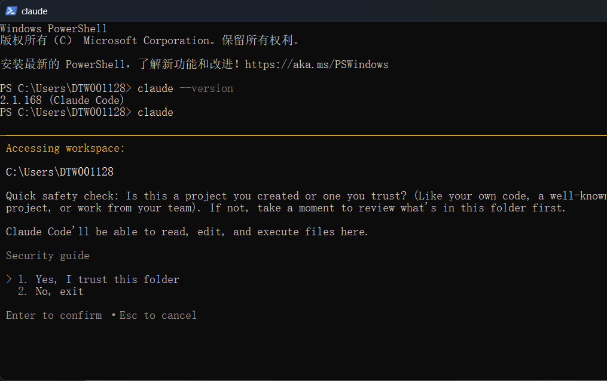
✅ 验证配置是否成功
配置完成后，输入以下命令验证：
claude # 启动 Claude Code如果能顺利进入交互界面，看到欢迎语和输入光标——恭喜，配置成功！你现在用的是 DeepSeek 的大模型，网络通畅，费用低廉。
.png)
🎉 恭喜！最难的两步（安装 + 配置国内 API）都搞定了！现在可以正式开始使用了。
4 第一次对话
万事俱备！现在让我们和 Claude Code 说第一句话。你会亲眼看到它帮你生成一个真实的网页。
🚀 启动 Claude Code
在终端中输入：
claude # 启动 Claude Code 交互模式你会看到 Claude Code 的欢迎界面，出现一个输入光标，等待你打字。
💬 说第一句话
试着输入下面这句话，然后按回车：
帮我创建一个写有"你好，世界！这是我用 AI 做的第一个网页！"的 HTML 文件，背景用好看的渐变色，字体大一点，保存为 hello.html按下回车后，神奇的事情发生了：
- Claude Code 理解你的需求（「哦，你要一个好看的网页」）
- 自动编写 HTML 和 CSS 代码
- 在你的当前目录下创建了
hello.html文件 - 告诉你文件在哪里，怎么打开它
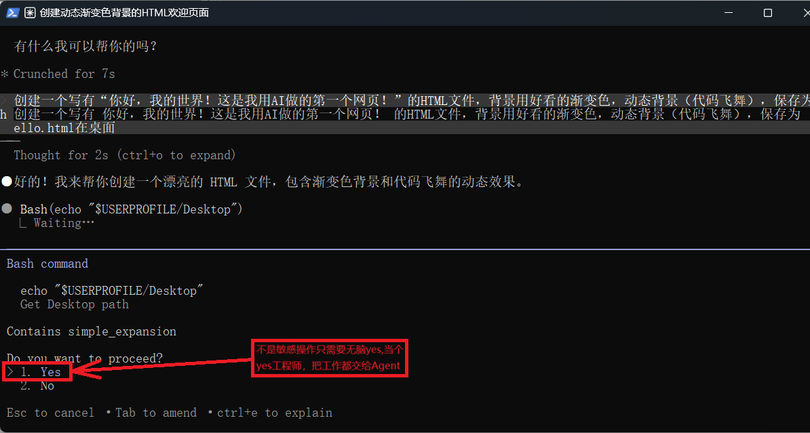
现在，打开你的文件管理器，找到那个 hello.html 文件，双击它——浏览器会打开，你就能看到自己「指挥 AI」做出来的网页了！
.png)
🎉 恭喜！你已经成功使用 Claude Code 完成了第一个任务！
⌨️ 常用操作速查
| 操作 | 按键 / 方法 |
|---|---|
| 发送消息 | 输入文字后按 Enter |
| 换行（不发送） | Shift + Enter |
| 退出 Claude Code | 输入 /exit 或按 Ctrl + C |
| 清屏 | 输入 /clear |
| 查看帮助 | 输入 /help |
| 让 Claude 查看文件 | 直接描述文件名或拖拽文件到终端 |
5 三个实战小项目
光说不练假把式。通过下面三个小练习，你会快速掌握 Claude Code 的日常用法。
💳 项目 1：制作个人名片网页
用 Claude Code 生成一张包含你个人信息的精美网页名片。
操作指令（复制到 Claude Code 中）：
帮我做一个个人名片网页，要求：
1. 姓名写"[你的名字]"，职业写"[你的职业]"，邮箱写"[你的邮箱]"
2. 设计要现代、好看，中心对齐
3. 用卡片式布局，白色卡片 + 浅色阴影
4. 加上好看的头像占位符
5. 保存为 card.html你学到了什么：
- 如何把需求描述清楚让 AI 理解
- 如何用中文和 AI 讨论设计细节
- 不满意的部分可以让 AI 修改（「帮我把背景换成蓝色」）
🔍 项目 2：让 AI 帮你解释代码
网上看到一段代码看不懂？让 Claude Code 逐行解释给你听。
操作指令（复制到 Claude Code 中）：
帮我解释一下下面这段代码每一行在做什么，用纯中文大白话：
function fibonacci(n) {
if (n <= 1) return n;
return fibonacci(n - 1) + fibonacci(n - 2);
}
console.log(fibonacci(10));你学到了什么：
- Claude Code 可以当作「随身编程老师」来用
- 看不懂的代码直接扔给它，让它解释到你看懂为止
- 你可以追问「再简单一点」「能用比喻解释吗」
🎨 项目 3：修改和优化网页
继续改进项目 1 的名片网页，让 AI 帮你调整样式。
操作指令（在同一个会话中继续）：
帮我把刚才的名片网页做以下修改：
1. 背景颜色改成从蓝色到紫色的渐变
2. 卡片字体再大一号
3. 在卡片底部加一排社交媒体图标（微博、微信、GitHub）
4. 鼠标悬停在卡片上时加一个轻微的上浮动画效果你学到了什么：
- Claude Code 的「上下文记忆」——它记得你之前的对话
- 迭代式开发：先做出基本版，再逐步优化
- 「所见即所得」：改完保存，刷新浏览器就能看到效果
6 在 VSCode 中使用 Claude Code（图形化界面）
觉得终端黑窗口太吓人？没关系！Claude Code 也有 VSCode 插件版本，全部用鼠标点击操作，像聊天软件一样简单。
🤔 什么是 VSCode？
VSCode（全称 Visual Studio Code）是微软出品的免费代码编辑器。把它想象成「高级版记事本」——可以写代码、看文件、装插件，而且是全中文界面。
如果你还没有安装 VSCode：
- 访问 https://code.visualstudio.com
- 下载安装包（Windows 选 .exe，Mac 选 .dmg）
- 双击安装，一路点「下一步」即可
🔌 第 1 步：安装 Claude Code 插件
- 打开 VSCode
- 点击左侧竖排工具栏的「扩展」图标（四个小方块的样子）
- 或者按快捷键
Ctrl + Shift + X（Mac 按Cmd + Shift + X） - 在搜索框中输入
Claude Code - 找到 Anthropic 官方发布的 「Claude Code」插件
- 点击绿色的 「Install（安装）」按钮
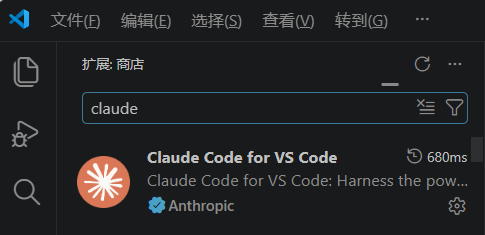
⚙️ 第 2 步：配置 DeepSeek API（用环境变量）
Claude Code 插件通过环境变量读取 API 配置，而不是 VSCode 的设置界面。这和第 3 章在终端中的配置方式完全一样——需要先在系统中设置好环境变量，VSCode 插件才能正常工作。
如果你已经按照第 3 章的步骤设置过环境变量了，可以跳过这一步，直接看下面的「第 3 步」。
如果还没设置，请先回到第 3 章，按照里面的命令设置 ANTHROPIC_BASE_URL 和 ANTHROPIC_API_KEY 两个环境变量。设置完成后，务必重启 VSCode，插件才能读到新的环境变量。
🚀 第 3 步：开始使用 — 三种打开方式
配置完成后，有三种方式打开 Claude Code：
| 方式 | 操作 | 适合场景 |
|---|---|---|
| 📌 侧边栏 | 点击 VSCode 左侧工具栏的 Claude Code 图标 | 日常聊天、问问题、写代码 |
| ⌨️ 快捷键 | 按 Ctrl + Shift + L（Mac: Cmd + Shift + L） |
快速呼出，最高效 |
| 🖱️ 右键菜单 | 选中一段代码 → 右键 → 选择「Claude Code: 解释代码」 | 针对某段代码提问 |
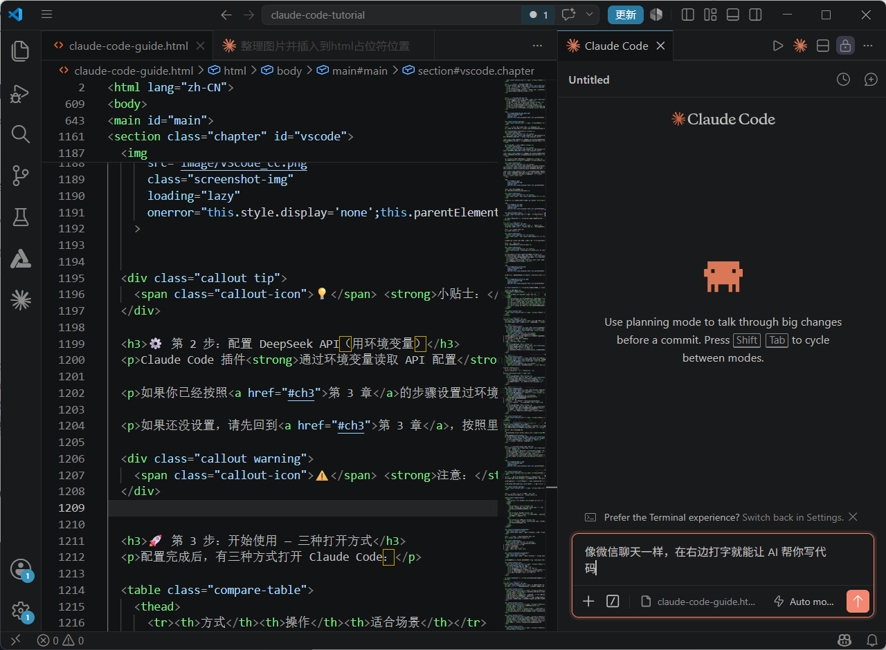
💬 第 4 步：第一次对话（VSCode 版）
在 Claude Code 对话框中输入：
帮我创建一个个人介绍网页，要求：
1. 名字叫"小明"，职业是"设计师"
2. 背景用好看的渐变色
3. 中间放一张圆形的头像占位图
4. 保存为 about.html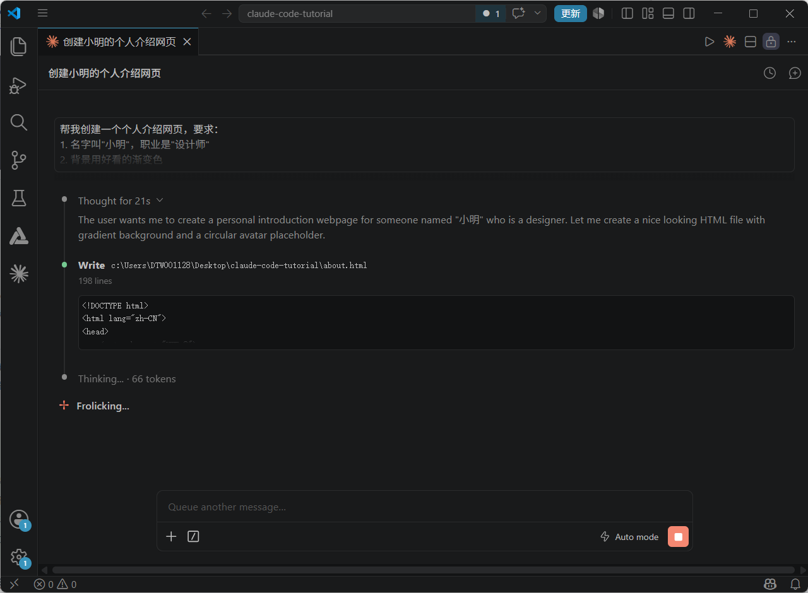
代码生成后，在 VSCode 的文件列表中找到 about.html，右键 →「Reveal in File Explorer（在文件资源管理器中显示）」，然后双击用浏览器打开——完美！全程没碰一下终端，全部用鼠标点点点就完成了。
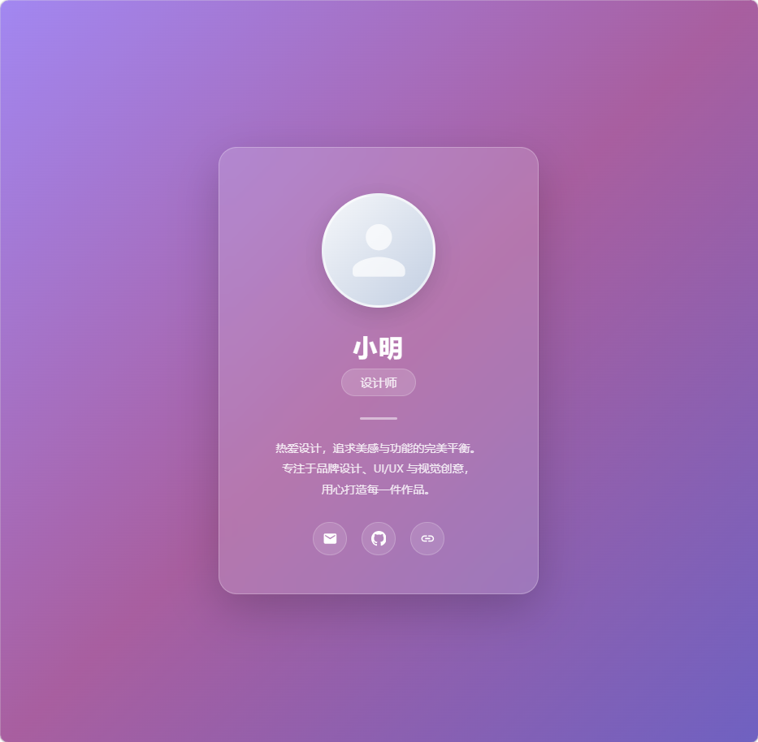
- ✅ 全图形界面，零命令行操作
- ✅ 边写代码边和 AI 聊天，所见即所得
- ✅ AI 生成的文件自动在编辑器中打开，立刻看到效果
- ✅ 选中代码右键就能让 AI 解释、优化、改 bug
- ✅ 支持中文界面，所有按钮都是中文
🎉 告别黑窗口！现在你可以用 VSCode 的图形界面愉快地使用 Claude Code 了。
7 常见问题与排错
安装和使用过程中难免遇到问题。别慌，下面汇总了最常见的几种情况，按步骤检查就能解决。
原因：Node.js 没有正确安装，或者环境变量没生效。
解决：
✅ 先确认 Node.js 是否装好：打开「控制面板 → 程序和功能」，搜索 Node.js。
✅ 如果已安装，关掉终端重新打开试试。
✅ 如果没安装，回到第 1 章重新安装。
✅ Windows 用户如果还不行，试试重启电脑（是的，重启解决很多问题）。
原因：当前用户权限不够。
解决：
✅ Mac / Linux：在命令前加
sudo，例如：sudo npm install -g @anthropic-ai/claude-code（会要求输入你的电脑登录密码）✅ Windows：以管理员身份运行 PowerShell。右键点 PowerShell 图标 →「以管理员身份运行」。
原因：npm 默认从国外服务器下载，国内网络可能很慢。
解决：换成国内的镜像源（淘宝 npm 镜像）。在终端中先执行：
npm config set registry https://registry.npmmirror.com然后再重新执行 install 命令。以后下载速度会快很多！
解决：
✅ 检查 Node.js 版本是否 ≥ 18：
node -v✅ 如果版本太低，去 Node.js 官网下载最新 LTS 版本覆盖安装。
✅ 检查网络连接：Claude Code 需要联网才能和 AI 对话。
原因：如果你开了 VPN 或代理，可能导致 Claude Code 连接失败。
解决：
✅ 试试关闭 VPN 再启动 Claude Code。
✅ 如果必须用代理，可以在终端中设置代理环境变量后再启动。
8 下一步学什么
你已经掌握了 Claude Code 的基本用法。但这只是开始——它还有很多强大的功能等着你去探索。
📚 官方资源
- 官方文档：https://docs.anthropic.com/en/docs/claude-code——最全面的参考资料
- Claude Code 概述：功能概览和快速入门
🚀 进阶功能预览
| 功能 | 简介 | 适合场景 |
|---|---|---|
| 项目模式 | 让 Claude Code 理解整个项目结构和代码 | 有多个文件的复杂项目 |
| /commands 快捷指令 | 用简短命令快速执行常见操作 | 重复性任务，提高效率 |
| MCP 工具扩展 | 给 Claude Code 接入外部工具和数据源 | 连接数据库、API 等专业场景 |
| CLAUDE.md 配置 | 自定义 Claude Code 的行为和偏好 | 让 AI 按你的习惯工作 |
| Git 集成 | AI 帮你管理代码版本和提交 | 团队协作、代码备份 |
🗺️ 推荐学习路径
- 第 1 周：每天用 Claude Code 做一个小任务（写个网页、解释一段代码、改个样式）——熟悉交互方式
- 第 2 周：尝试让 Claude Code 帮你完成一个完整的小项目（比如个人主页、在线简历）
- 第 3 周：学习项目模式和 CLAUDE.md 配置，让 Claude Code 更懂你
- 第 4 周+：探索 MCP 工具和进阶功能，把 Claude Code 融入日常工作流
💬 社区与支持
- 遇到问题可以在 Anthropic 官方社区提问
- 关注 Claude Code 更新日志，了解新功能
- 把你的使用经验和技巧分享给身边的朋友